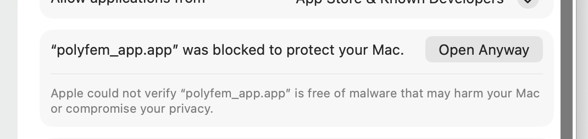
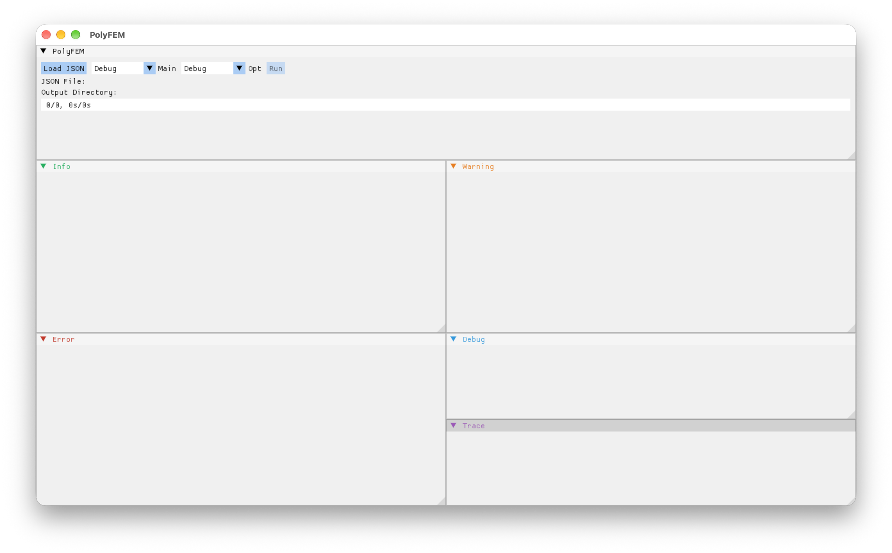
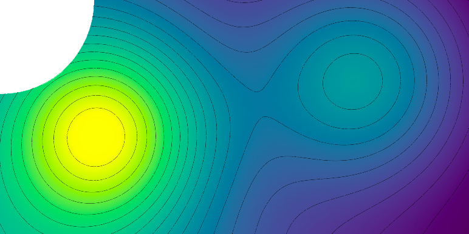
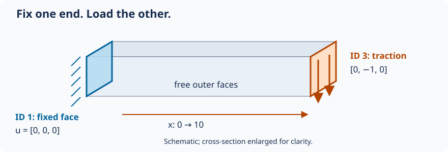
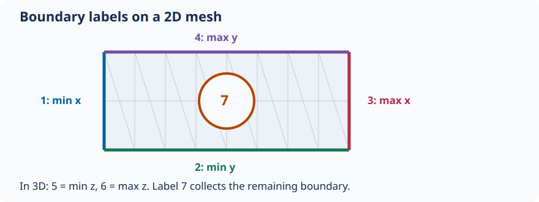
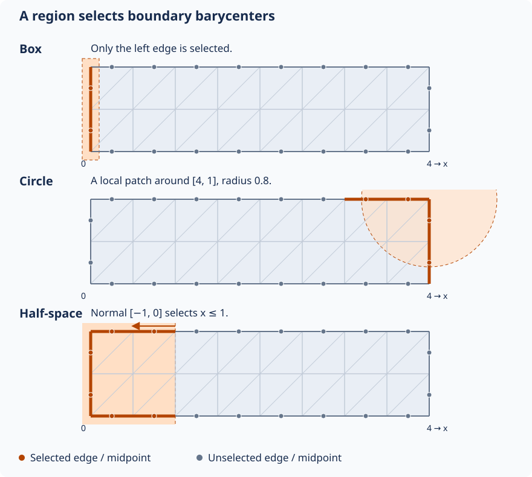

PolyFEM user guide: from first run to advanced simulations¶
Start by opening the desktop app and running a complete scalar example. Then solve a cantilever fixed at one end, learn how meshes and boundary labels work, and explore materials and finite-element spaces. Dynamics, contact, shared configurations, and coupled physics come later, all on this page.
The examples draw on polyfem-data and PolyFEM’s tests. The first two exercises include complete configurations and meshes: keep each JSON and its mesh together. Later sections link to complete examples in the data repository.
1. Get PolyFEM¶
PolyFEM’s Artifacts workflow builds desktop packages for Linux x86-64, macOS ARM64, and Windows AMD64.
- Open the workflow and choose a successful run on
main. - Under Artifacts, download the package matching your operating system and processor. GitHub may ask you to sign in. Artifacts can expire; choose a newer successful run if a download is unavailable.
- Extract the Linux
.tar.gzor Windows.zip. On macOS, open the.dmgand copypolyfem_app.appto Applications before opening it. - Launch
polyfem_app, the desktop application. It has Load JSON and Run controls. The separatePolyFEM_bincommand-line executable is optional.
Use a source build if no package matches your platform, or if you want to modify PolyFEM. Follow the current build instructions for prerequisites and platform-specific details. Enable the desktop application when configuring:
git clone https://github.com/polyfem/polyfem.git
cd polyfem
cmake -S . -B build -DCMAKE_BUILD_TYPE=Release -DPOLYFEM_WITH_APP=ON -DPOLYFEM_WITH_PYTHON=OFF
cmake --build build
Launch polyfem_app from the build directory (the .app bundle on macOS).
macOS: allow the app to open¶
macOS may report that Apple could not verify polyfem_app.app. If you downloaded it from the official PolyFEM workflow and trust that download:
- Try opening the copied application once, then dismiss the verification warning.
- Open System Settings → Privacy & Security and scroll to Security.
- Find the message naming
polyfem_app.appand click Open Anyway. - Authenticate if requested, then confirm Open.

This is the per-app exception described in Apple’s instructions for opening downloaded apps. A warning that an app will damage your computer or contains malware is different; follow Apple’s guidance for that warning. Allowing the app to open does not diagnose a model-loading or solver error after launch.
Get help and report a bug¶
If installation, loading, or solving fails, check the PolyFEM issue tracker and report a bug if needed. Include your operating system and architecture, the workflow run or source commit, the smallest failing JSON and its mesh, and the error text. For a packaged-app problem, mention whether the same input works in a source build.
Before sharing screenshots or logs, remove usernames, home-directory paths, and private project names. The app displays full input and output paths.
2. Download a complete first example¶
Create a writable directory called polyfem-first-run and save both files there:
run.json— the scalar simulation configuration.plate_hole.obj— the mesh, already prepared at the size used by this exercise.
polyfem-first-run/
├── plate_hole.obj
└── run.json
The mesh comes from standard/plate_hole.obj. The downloaded version is ready to use; the JSON loads its coordinates directly. Keep the mesh beside run.json, whose mesh entry is "mesh": "plate_hole.obj".
3. Run the simulation in the desktop application¶

- Launch PolyFEM (
polyfem_app). - Click Load JSON and select
run.json. After loading, the app should show the JSON File and Output Directory paths. - Click Run and wait for completion. Check the displayed error/log panels if it fails.
- Look in the Output Directory shown by the app for
result.vtuandstats.json. If no output directory was specified, the GUI creates a run folder underoutput/beside the input.
The screenshot shows the app before an input is loaded. An empty JSON File line and 0/0 progress are not evidence of a solver failure; load the configuration first. The app may also offer Load HDF5 for bundled inputs; start with JSON here.
Optional command-line alternative
From the directory containing both files, run the separate command-line executable:
/path/to/PolyFEM_bin --json run.json
What are we solving?¶
The Laplacian is a scalar PDE: its solution is one number at each point, rather than a displacement vector. This example uses PolyFEM’s Franke preset to supply a test problem. PolyFEM assembles the finite-element system, solves it, and exports the field for visualization.
4. Inspect the results¶
Install ParaView and open result.vtu from the app’s output directory.
- Click Apply after loading the file.
- Choose the solution field in the Coloring dropdown.
- Compare with the reference below.
| Input mesh | Reference solution |
|---|---|
 |
 |
This scalar field lives on a fixed geometry. In the next exercise, a vector displacement field will describe a bending solid.
5. Understand run.json¶
Here is the complete downloaded input:
{
"geometry": {
"mesh": "plate_hole.obj",
"surface_selection": { "threshold": 1e-7 }
},
"materials": { "type": "Laplacian" },
"preset_problem": { "type": "Franke" },
"solver": { "linear": { "solver": "Eigen::SparseLU" } },
"output": {
"json": "stats.json",
"paraview": { "file_name": "result.vtu" }
}
}
| Section | Meaning |
|---|---|
geometry.mesh |
Load the mesh in its supplied coordinates |
surface_selection |
Assign boundary labels; explained below |
materials |
Choose the governing PDE or material model |
preset_problem |
Supply this built-in scalar test problem |
solver |
Choose a numerical linear solver |
output |
Name the visualization and statistics files |
Try: change only output.paraview.file_name, reload the JSON, and run again. Find the new file in the displayed output directory.
This exercise follows standard/plate_hole.json, with the mesh prepared in advance and the regression-check settings omitted. The JSON input guide, generated specification, and interactive JSON builder describe the available options.
6. First mechanics example: a cantilever¶
A cantilever is a beam fixed at one end and loaded at the other. Start from a complete new input so the constraints and load are easy to see.
Save these two files together in a writable polyfem-cantilever directory:
The mesh is the unchanged standard/bar.msh used by the heated clamped-bar test. Here we use that geometry for a simpler static linear-elastic problem. Its dimensions are 10 × 1 × 1, with length along x; it is already positioned correctly.

{
"geometry": {
"mesh": "bar.msh",
"surface_selection": { "threshold": 1e-6 }
},
"materials": { "type": "LinearElasticity", "E": 20000, "nu": 0.3 },
"boundary_conditions": {
"dirichlet_boundary": [ { "id": 1, "value": [0, 0, 0] } ],
"neumann_boundary": [ { "id": 3, "value": [0, -1, 0] } ]
},
"space": { "discr_order": 1 },
"solver": { "linear": { "solver": "Eigen::SparseLU" } },
"output": {
"json": "cantilever-stats.json",
"paraview": { "file_name": "cantilever.vtu" }
}
}
Read the setup: surface_selection labels the minimum-x end 1 and maximum-x end 3. The Dirichlet value [0, 0, 0] fixes all three displacement components on the left face. The Neumann value [0, -1, 0] applies a uniform downward traction to the right face. The remaining faces are free. The load and stiffness are illustrative values in consistent units.
- In PolyFEM, click Load JSON, select
cantilever.json, and click Run. - Open
cantilever.vtufrom the displayed output directory in ParaView and click Apply. - Apply Warp By Vector and select the displacement/solution vector. Increase the warp scale if needed to see the small deformation; the beam should bend downward and stay fixed at the left face.
- Color by displacement magnitude to see the change along the beam. A magnified warp is a visualization aid, not the physical displacement scale.
Try: double E and rerun with the same load. Linear elasticity should give half the displacement. Then restore E and halve the traction: this should also halve the displacement. Keep a copy of each result to compare.
7. Meshes: what PolyFEM discretizes¶
The first example uses 2D triangles; the cantilever uses 3D tetrahedra. A mesh divides a domain into elements over which the solution is approximated.
| Input geometry | Finite elements | Typical use |
|---|---|---|
| 2D triangular or quadrilateral mesh | Triangles or quads | A planar PDE or 2D solid |
| 3D tetrahedral or hexahedral volume mesh | Tets or hexes | A volumetric solid or fluid |
| Polygonal / polyhedral mesh | Polygons / polyhedra | Specialized approximation spaces |
| Surface triangle mesh in 3D | Surface triangles | For example, a collision obstacle |
For 3D elasticity, use a volume mesh with interior cells. A surface shell alone does not define the volumetric solid in this walkthrough. File extensions are not enough to tell the difference: .msh can contain different element types, while an OBJ may describe a planar 2D domain or a surface in 3D.
Load geometry at the intended size¶
"geometry": { "mesh": "bar.msh" }
Start with the mesh at the correct size and position, and keep length, stiffness, load, density, and time units consistent. For several bodies, geometry becomes a list of mesh entries; material-region IDs are explained in the materials section.
To explore element types later, compare standard/laplace.json, a 3D cube, with standard/laplace_quad.json, a 2D quad mesh. These are different domains, so comparing their errors is not a controlled convergence experiment. The advanced section explains how to run repository examples with shared settings.
8. Sidesets, selections, and boundary conditions¶
A sideset groups boundary edges in 2D or boundary faces in 3D under an integer ID. A boundary condition names that ID. The ID is a label, not a coordinate or node number.
A volume ID instead labels a region of elements and connects it to a material. Surface IDs and volume IDs are independent: a body with volume ID 2 can have boundary sidesets 1, 3, and 7.
| Setting | What receives labels? | Used for |
|---|---|---|
surface_selection |
Boundary edges/faces | Fixed boundaries, tractions, prescribed motion |
volume_selection |
Domain elements | Material regions |
Automatic bounding-box sides¶
Both downloaded examples use a bounding-box side selector:
"surface_selection": { "threshold": 1e-6 }

| ID | Boundary near |
|---|---|
| 1 | Minimum x (left) |
| 2 | Minimum y (bottom) |
| 3 | Maximum x (right) |
| 4 | Maximum y (top) |
| 5 / 6 | Minimum / maximum z, in 3D |
| 7 | Remaining boundary edges/faces, such as the hole |
The threshold is a distance tolerance in mesh coordinates. A boundary edge/face is labeled using its barycenter (midpoint for an edge, centroid for a triangle). This labels existing boundaries; it does not create cuts or change the mesh.
In the cantilever, ID 1 connects directly to "dirichlet_boundary": [{ "id": 1, "value": [0, 0, 0] }]. A zero Dirichlet value means zero displacement, while a Neumann value specifies traction. A body load belongs in boundary_conditions.rhs, rather than on a sideset. Faces without an explicit traction are free in this example.
Two ways to assign IDs¶
Use tags from the mesh or a matching file. If a supported mesh already carries boundary or material tags, preserve them by leaving the corresponding selection unspecified. Alternatively, supply a tag file:
"geometry": {
"mesh": "tagged.msh",
"surface_selection": "surface_tags.txt",
"volume_selection": "volume_tags.txt"
}
These are illustrative names. Tag files must match PolyFEM’s ordering of the mesh primitives; they are not lists of arbitrary vertex IDs. selection/file.json shows a real surface-tag file, alien.txt. See the selection reference for the file format.
Choose a region geometrically. A box, sphere, cylinder, or half-space can assign a sideset ID by testing boundary barycenters. This is useful for a local patch that does not follow a whole bounding-box side.

The diagram uses a 2D strip spanning x = 0…4 and y = 0…1. These are selection fragments, not complete simulations; use one in the mesh’s geometry entry:
"surface_selection": [
{ "id": 10, "box": [[-0.1, -0.1], [0.1, 1.1]] }
]
This narrow box selects only the left boundary in the illustrated mesh.
"surface_selection": [
{ "id": 10, "center": [4, 1], "radius": 0.8 }
]
A circular neighborhood selects a patch near the upper-right corner. In 3D, supply three coordinates to select within a sphere.
"surface_selection": [
{ "id": 10, "point": [1, 0], "normal": [-1, 0] }
]
The normal points into the selected half-space: here x ≤ 1. It can include parts of several boundary sides, not just edges lying on the plane.
Only edges/faces whose barycenters pass the test are selected. Intersecting part of an edge is not enough. The orange dots in the diagram make that distinction visible. On coarse meshes, selection boundaries can look stepped.
For 3D cylindrical neighborhoods, use p1, p2, and radius as in selection/cylinder.json. The actual plane, sphere, and file-selection tests all use the same alien mesh. Compare their geometry.surface_selection blocks now; the advanced section explains the shared scene before you run them.
When coordinates should track the object’s bounding box, a box selector can use "relative": true: its corners then use 0…1 coordinates along each axis. Start with absolute coordinates and a mesh whose dimensions you know. Full options are in the JSON input guide and generated specification.
9. Materials: from one elastic solid to several regions¶
The materials section selects the PDE or constitutive law and its parameters. It is not just a palette or visualization label.
Start with linear elasticity¶
"materials": {
"type": "LinearElasticity",
"E": 210000,
"nu": 0.3
}
Here E is Young’s modulus (stiffness scale) and nu is Poisson’s ratio (lateral contraction relative to stretching). For time-dependent mechanics, rho controls mass density. Physical values must use consistent units.
The LinearElasticity model assumes small strains. For larger deformations, use an appropriate nonlinear model instead:
"materials": {
"type": "NeoHookean",
"E": 1000000,
"nu": 0.4,
"rho": 1000
}
This is a valid example of a compressible Neo-Hookean material entry. It does not alone define a full simulation: geometry, loads, constraints, and possibly time settings still matter.
Which material family should I choose?¶
| Model | When to consider it |
|---|---|
Laplacian, Helmholtz |
Scalar PDEs / simple numerical examples |
LinearElasticity |
Small-displacement solids |
SaintVenant |
Geometrically nonlinear elasticity with a simple constitutive model |
NeoHookean |
Finite-deformation hyperelastic solids |
MooneyRivlin and Ogden variants |
More specialized hyperelastic models requiring their own parameters |
HGOFiber, HGODispersion, ActiveFiber |
Anisotropic or active-fiber material models |
Stokes, NavierStokes |
Incompressible fluid flow; mixed spaces and fluid parameters are required |
NavierStokesFSI |
Coupled fluid–structure interaction; advanced, with several coupled fields |
ThermoElasticity |
Coupled displacement and temperature fields |
This is a guided subset, not a list of interchangeable options. Each model has its own required parameters and mathematical assumptions. See formulations and the generated material specification before switching a real application.
Multiple materials: connect volume IDs to material IDs¶
A scene can contain several material regions:
"geometry": [
{ "mesh": "stiff_part.msh", "volume_selection": 1 },
{ "mesh": "soft_part.msh", "volume_selection": 2 }
],
"materials": [
{ "id": 1, "type": "NeoHookean", "E": 1e8, "nu": 0.4, "rho": 2000 },
{ "id": 2, "type": "NeoHookean", "E": 1e6, "nu": 0.4, "rho": 1000 }
]
This is a configuration fragment, not a runnable scene: both meshes must exist and you need suitable boundary conditions. Notice the correspondence between volume_selection: 1 and materials[0].id: 1, and similarly for ID 2.
Try it: on a multi-body model, change one material’s E by a factor of 10 while keeping everything else fixed. Compare the displacement field and force response. If you want the complete, documented workflow (including mesh generation and assignment of region IDs), continue with Simulating Multiple Materials in a Single Mesh.
From the test suite: one mesh with multiple material IDs
multi-material/stretch-cubes.json uses a tagged volume mesh (cubes_v41.msh) and three materials entries, with IDs 1, 2, and 3. It also uses geometric boxes to select the left and right boundary regions, and prescribed motion to stretch the object.
Inspect in order: the mesh file and its volume IDs → materials[].id → surface_selection → boundary_conditions. The same integers may appear in different roles, but volume IDs choose material regions while surface IDs choose boundary regions.
Try: make the middle material stiffer by changing only its E. Keep the original file and mesh in their repository directory. For the mesh-generation procedure, follow the existing multi-material tutorial.
10. Finite-element spaces: separate geometry, approximation, and physics¶
An FEM computation involves at least three choices:
- Mesh: how the domain is split into elements (triangles, quads, tets, hexes, etc.).
- Approximation space: the shape functions and number/location of degrees of freedom (for example, linear versus quadratic Lagrange).
- Physics/material: which equations the degrees of freedom satisfy (for example, Laplacian versus elasticity).
The last two are not the same thing. You can solve the same elasticity model on the same mesh using different approximation orders, or solve different physics using the same FE space.
Polynomial degree: P1 versus P2¶
The easiest experiment is to keep the input and change one field:
"space": {
"discr_order": 1
}
Then try:
"space": {
"discr_order": 2
}
The order controls the finite-element approximation, not the material law. Degree 1 generally means a piecewise-linear solution on simplicial elements; degree 2 adds additional degrees of freedom and can resolve more variation on the same mesh, at greater assembly/solve cost.
Experiment: solve the same cantilever problem at orders 1 and 2. Compare tip displacement, degrees of freedom, and runtime without changing the mesh or physics. For an accuracy study, also compare against a refined reference solution; the cantilever input does not supply an exact solution. A smoother ParaView image alone does not establish greater accuracy.
From the test suite: compare element order
standard/laplace_3d_b2.json explicitly chooses "basis_type": "Bernstein" and "discr_order": 2. For a P1/P2 experiment on a single problem, duplicate the cantilever input and change only space.discr_order.
Try: compare the number of degrees of freedom, solve time, and solution/error statistics. When comparing separate polyfem-data files, first check whether they also changed the mesh order or refinement level.
Basis families¶
The current JSON specification exposes:
"space": {
"discr_order": 2,
"basis_type": "Lagrange"
}
| Basis | Interpretation / restriction |
|---|---|
Lagrange |
Standard nodal finite-element basis; good default |
Spline |
Spline-based basis on supported quadrilateral/hexahedral discretizations |
Serendipity |
Reduced-DOF polynomial family on supported quadrilateral/hexahedral meshes |
Bernstein |
Bernstein basis option (check mesh/feature compatibility before using) |
For polygonal elements, PolyFEM has a separate poly_basis_type selector. Available names in the current specification include MFSHarmonic, MeanValue, and Wachspress. Those are specialized approximation constructions: they are not simply different names for P1.
The space.use_p_ref option allows geometry-dependent a priori p-refinement. It is a separate concept from simply increasing a global discr_order. For background, see the technical formulations and PolyFEM’s Decoupling Simulation Accuracy from Mesh Quality work.
From the test suite: spline and polygonal choices
The standard/laplace_spline.json configuration uses a quadrilateral mesh and space.basis_type: "Spline". The standard/laplace_mv.json and standard/laplace_ws.json files instead use a polygon mesh with Mean Value and Wachspress poly_basis_type options.
Try: compare the two polygon examples first: their configurations have the same mesh and preset, so the polygonal basis is the meaningful change. Then look at the quadrilateral spline example as a separate basis-family demonstration.
Mixed formulations have multiple fields¶
Not every simulation has a single scalar or displacement vector as its unknown. For example, incompressible flow solves for both velocity and pressure. Fluid–structure interaction can also include solid displacement and ALE mesh displacement. In those cases, the input material and coupled problem configuration refer to space IDs for the different fields; using only a single discr_order is not a complete mixed formulation setup.
Don’t guess a coupled setup
A working NavierStokesFSI example needs more than changing materials.type. It has required field-space IDs, geometry IDs, viscosity, and nested material choices. Start from a compatible tested configuration and consult the generated JSON specification.
Mesh order is not necessarily solution order¶
A curved/high-order geometric map describes where the elements are in physical space. The space.discr_order describes how the unknown field is approximated. PolyFEM supports separating these decisions in supported cases. Increasing the solution order does not automatically repair a poorly resolved geometric boundary; conversely, a curved mesh can represent geometry well without forcing the solution space to the same order.
11. Advanced input: shared configurations and geometry operations¶
The downloaded scalar and cantilever examples are complete inputs. Larger repository scenes often reuse settings or position several objects. Learn these features once the simpler cases work.
Run complete examples from the data repository¶
Download or clone polyfem-data and keep its directory structure intact. A small JSON may depend on other JSONs, meshes, or tag files elsewhere in that tree. Open the original example with Load JSON, then Run. Regression files may also contain tests entries for automated accuracy checks; those are not required in your own input.
Read inherited configurations: common and patch¶
standard/neohookean.json supplies a material and inherits the rest of its scene:
{
"common": "elastic_common.json",
"materials": { "type": "NeoHookean", "id": 1, "E": 20000, "nu": 0.3 }
}
Read elastic_common.json for geometry, constraints, and solver settings, then its parent common.json for output settings. Downloading only the top-level JSON is insufficient. The selection tests similarly share selection/main.json; its sideset IDs 1 and 3 connect to the regions selected in each child input.
Some examples apply a JSON patch to a baseline. P2 ball bounce uses JSON Patch operations to replace the mesh and FE order relative to P1. Inspect both files and keep the parent resources available. For an early experiment, editing a copy of a complete input is easier to follow.
Read material comparisons in context¶
From the test suite: change the law, not the domain
Read standard/hooke.json, standard/saint_venant.json, and standard/neohookean.json. The first two use a cube and the ElasticExact preset; Neo-Hookean inherits the displacement-controlled elastic_common.json baseline.
Important: because these inputs do not all have identical boundary conditions, they are examples of material configuration, not an apples-to-apples quantitative constitutive-model comparison. To isolate a material law, hold geometry, loads, and constraints fixed and change the material in a copy of one runnable configuration.
For specialized materials, standard/hooke_anisotropic.json supplies anisotropic elasticity parameters, while standard/active-fiber.json builds a composite with MaterialSum, NeoHookean, VolumePenalty, and ActiveFiber. Read them after the isotropic cases.
Positioning geometry and changing scale¶
For scenes that need object placement, transformation can scale or translate a mesh without editing its file:
"geometry": {
"mesh": "part.msh",
"transformation": {
"scale": [1, 2, 1],
"translation": [0, 0.5, 0]
}
}
This is a fragment; supply the mesh and remaining simulation settings. Geometric selection runs on the positioned geometry, so moving an object may require changing absolute selection coordinates. With multiple bodies, each geometry entry can have its own placement and material-region ID; the sphere–mat example demonstrates this.
geometry.advanced.normalize_mesh rescales a mesh to a standard size. This is useful in some numerical tests, but it changes physical dimensions and therefore the interpretation of loads and material parameters. The beginner downloads already have the intended geometry; no such operation is needed there.
Partial displacement constraints¶
Some mechanical setups prescribe only one component, using a dimension mask. That is useful for rollers or symmetry conditions; see the detailed boundary-condition tutorial. The cantilever instead fixes the whole displacement vector on its clamped face, so it needs no mask.
12. Time-dependent simulations: motion and integration¶
For transient problems, the top-level time section determines the simulated interval and time-stepping scheme. A material’s density and the problem’s initial conditions become especially important. The UI still follows the same workflow: Load JSON → Run, but output often becomes a time sequence instead of one VTU.
Start with these actual tests:
interpolation/linear_ramp.jsongives boundary IDs 1 and 3 prescribed displacement values, with different linear-ramp intervals. It inherits the rest of the scene frominterpolation/main.json. This demonstrates that how a displacement changes over time is separate from which boundary receives it.time-int/euler.jsonandtime-int/newmark.jsonboth inherittime-int/main.json; they chooseImplicitEulerandImplicitNewmarkrespectively.
"time": {
"integrator": "ImplicitEuler",
"tend": 0.1,
"time_steps": 10
}
Try: compare the two integrator configurations without editing them first. Then change the time-step count in a copy, keeping total simulated time fixed. Compare trajectory/output across steps; do not equate a difference in numerical damping with a material effect.
For a more visual prescribed-motion example, inspect time-bc/walking-elephant.json. It uses spatial selections and time-dependent boundary motion on an elephant mesh.
13. Contact: two bodies and a barrier¶
Contact is more than two overlapping meshes: the objects must be represented by appropriate geometry, a constitutive model must define their motion, and collision/contact must be configured.
Start with contact/examples/3D/unit-tests/2-cubes.json. It has two cube meshes positioned at different heights, a fixed boundary selection on the lower one, gravity as rhs, and a time-dependent solve. Its common file supplies shared contact settings; inspect that too.
Next look at contact/examples/3D/large-ratios/sphere-mat.json, where the sphere and the mat have different volume IDs and different Neo-Hookean parameters. The mat boundaries also move with expressions involving t.
Read in order: geometry (objects and transforms) → volume_selection (body/material IDs) → surface_selection (prescribed boundaries) → materials → contact and time. Run from the intact data tree; both scenes refer to external meshes and shared settings.
For friction, changing time steps, and codimensional obstacles, the IPC Quick Start Guide goes much deeper.
14. Mixed spaces and coupled physics¶
A scalar Laplace problem has one unknown; incompressible solids and fluids have more than one field. The JSON assigns FE space IDs, which are distinct from material-body IDs and boundary sideset IDs.
The standard/stokes_static.json example uses velocity in space 0 and pressure in space 1:
"materials": {
"type": "Stokes",
"viscosity": 100,
"velocity_space_id": 0,
"pressure_space_id": 1
},
"space": {
"discr_order": [
{ "fe_space": 0, "order": 2 },
{ "fe_space": 1, "order": 1 }
]
}
Those are Taylor–Hood-style P2/P1 choices for this example—not different materials, and not two different meshes. standard/incompressible.json uses analogous displacement/pressure space IDs for incompressible elasticity.
More advanced combinations are represented by:
standard/thermoelastic_heated_clamped_bar.json: separate displacement and temperature fields, each with its own boundary conditions or right-hand sides.standard/navier_stokes_transient.json: transient fluid flow with velocity and pressure.standard/navier_stokes_fsi_simple_square.json: a coupled fluid–structure interaction setup with velocity, pressure, ALE mesh displacement, and solid displacement spaces. It also distinguishes fluid and solid geometry IDs.
Try: in the FSI file, find each *_space_id, then locate its matching entry under space.discr_order. Identify the fe_space used by each boundary condition. Do not attempt to turn a single-field elasticity input into FSI just by changing materials.type.
These coupled examples are a reading path first; run them only once the simpler configurations work and you are comfortable interpreting their mesh dependencies, convergence settings, and output.
15. Suggested practice sequence¶
Use real polyfem-data files as your starting point. Begin with the complete cantilever download; then use repository examples, keeping their parent configurations, meshes, and resource files available.
| Exercise | Start from | One change to study |
|---|---|---|
| A. Change stiffness | Cantilever | Double E with the same load; compare displacement |
| B. Change resolution | Cantilever | Increase space.discr_order; compare displacement and cost |
| C. Change boundary labeling | Alien plane selection | Compare with sphere or file selection; inspect affected sidesets |
| D. Change a material region | Stretching cubes | Change only middle-region E |
| E. Change time integration | Euler | Compare its inherited scene with Newmark |
| F. Change FE basis | Polygonal Mean Value | Compare with Wachspress |
| G. Identify mixed fields | Stokes | Trace velocity_space_id, pressure_space_id and FE orders |
The goal is to explain why the result changed. If two cases also use different meshes, boundary conditions, or solver settings, they are not a controlled single-parameter comparison.
16. Where to go next¶
- Time stepping and moving boundary conditions: the full Getting Started tutorial introduces
time.dt,time.tend, and time-dependent expressions. - Contact and friction: the IPC Quick Start Guide begins with two cubes falling onto a plane, then develops stiffness, collision, and time-step variations.
- Several materials in one scene: see the Multi-Material tutorial.
- Real-world test scenes: explore the polyfem-data repository. Its examples are useful as complete configurations, but some refer to meshes and shared JSON files elsewhere in that repository. Keep their relative paths intact when running them.
Troubleshooting¶
The app cannot start. On macOS, follow the Gatekeeper instructions above for the verification warning. Check that the downloaded package matches your architecture (notably macOS ARM64 versus Intel). The GUI application is polyfem_app; PolyFEM_bin is the separate CLI executable.
Cannot open a mesh. Make sure you downloaded the linked mesh file, not a GitHub HTML page, and kept its name unchanged beside the JSON. The scalar input expects plate_hole.obj; the cantilever expects bar.msh.
The JSON cannot be parsed. JSON requires commas between entries, double-quoted keys, and no trailing comma after the last property. After an edit, check the commas between the materials, boundary_conditions, and solver blocks.
The app cannot load the JSON. Keep run.json with plate_hole.obj, or cantilever.json with bar.msh. The Load JSON button expects a JSON configuration, not a mesh file.
The simulation ran but you cannot see the result. Use the Output Directory shown by the app and look for result.vtu, cantilever.vtu, or the corresponding statistics JSON. Open the VTU file in ParaView and click Apply.
The result doesn’t look like the picture. Check the chosen field and color scale. Elasticity results may need the Warp By Vector filter; the Laplacian example does not.